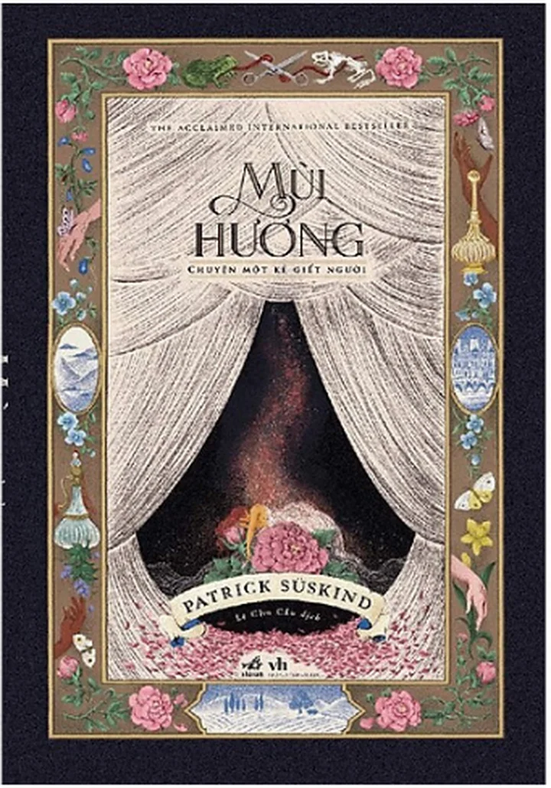

Review sách - Mùi hương - Tiểu thuyết của Patrick Suskind
21:31 11/04/2024
Jean-Baptiste Grenouille, một kẻ sinh ra trong bẩn thỉu, dơ dáy, nhơ nhớp hệt như Paris. Cái thành phố ô nhiễm, hôi thối với trăm thứ mùi mồ hôi người, mùi chất thải, mùi rác rưởi, mùi thịt, mùi cá, mùi rau, mùi máu, mùi phân, mùi nước tiểu, mùi cống rãnh…. Suýt thoát chết trong gang tấc, hài nhi duy nhất sống sót sau khi bốn hài nhi khác đã bị mẹ gã cho từ giã cuộc đời, Grenouille đã chứng tỏ sức sống mãnh liệt của gã. Lớn lên nhưng không có mùi, không ai chịu nhận nuôi gã như bà vú cuối cùng đã nói gã là hiện thân của ác quỷ. Bản thân mình không có mùi nhưng gã được trời phú cho cái mũi thần thánh, cái mũi biết ngửi ra từng mùi một rồi lưu lại, có khả năng phân loại mùi xếp vào ngăn riêng hệt như cái ổ cứng máy tính dung lượng lớn vậy. Gã thu nạp hết tất cả các loại mùi, thơm tho, hôi thối, ôi thiu tất cả. Cái mũi của gã thần thánh đến nỗi chỉ cần ngửi là gã có thể đi trong đêm không cần đèn, ngay cả trong bóng tối gã vẫn có thể lấy ra được đúng thứ mình cần. Với cái mũi thần sầu như thế trong mắt gã tất cả những nhà chế tạo nước hoa trên thế gian này chỉ là chỉ là những kẻ a ma tơ. Gã không ngừng nuôi ước mong sẽ chế tạo loại nước hoa thơm nhất, đỉnh cao nhất, loại nước hoa có thể khiến toàn dân nước Pháp quỳ mọp xuống chân gã kể cả nhà vua Pháp. Và mùi hương của những trinh nữ 18 mà gã vô tình ngửi thấy đã thổi bùng lên ham muốn của gã, đã đánh thức dậy con ác quỷ trong thẳm sâu con người gã.
Văn phong của Patrick Suskind trong Mùi Hương phải nói là cực kỳ quyến rũ. Như thể thứ nước hoa vừa êm ái, dịu dàng vừa gay gắt, nồng nàn hấp dẫn mình đọc liên tục không ngừng được cho đến cuối. Đọc Mùi Hương mình như thể sống lại với Paris trong Les Miserables, trong Thằng Gù Nhà Thờ Đức Bà vậy. Một thành Paris đói nghèo, khốn khổ khốn nạn với những phận người đói rách, hèn hạ, sống trong những khu phố bẩn thỉu, nhớp nhúa bán những thứ đồ ôi thiu, ô nhiễm với đủ thứ mùi hôi thối. Một thủ phủ Paris ngập đầy rác rưởi, bẩn tưởi bậc nhất nước Pháp. Ngay cả tầng lớp quý tộc cũng chẳng đẹp đẽ, thanh cao gì hơn thế. Ôi nhưng sao tôi yêu một Paris như thế! Một Paris chất như nước cất, một Paris mà người dân của nó sống quay quắt, khốn nạn trong cái đói, cái hèn như mẹ thằng Grenouille, như những bà vũ, như những người thợ thuộc da… Một Paris khiến người ta không thể quên nổi một khi đã làm quen với nó, làm quen với những Jean ValJean, với Fantine, với Javert, Gavroche rồi thằng Gù, rồi Esmeralda v.v… Ôi Paris! Paris quá đẹp, nước Pháp quá đẹp đù ô uế, dù nhơ nhớp tất cả đều nhờ áng văn quá mượt mà, quá hấp dẫn của Patrick Suskind. Ông tả ngay cả những cảnh bẩn tưởi nhất nhưng giọng văn của ông vẫn mượt như nhung, pha lẫn vẻ lạnh lùng. Tất cả tạo nên thứ nước hoa thôi miên mình không thể bỏ sách xuống như toàn dân thành Paris quay cuồng, bị chinh phục bởi thứ nước hoa thơm như nữ thần của Jean-Baptiste Grenouille. Khi đã tạo ra một nhân vật như Grenouille thì tác giả đương nhiên sẽ chứng tỏ mình là nhà pha chế nước hoa thiên tài, biết tạo ra những cao trào, biết tạo ra những giọt mùi hấp dẫn độc giả đến cực độ. Đó là hai cảnh cao trào gần cuối tác phẩm khiến người đọc không còn lựa chọn nào khác là phải hít lấy hít để, hít cho căng lồng ngực những giọt mùi quý giá ấy và dư âm vẫn còn đọng lại mãi mãi trong tâm hồn. Ôi! Giọt mùi vô cùng gay gắt, vô cùng nồng nàn nhưng sao vẫn quyến rũ, nhưng sao vẫn khiến độc giả như u mê, như ngây ngất như vừa qua một cơn khoái cảm vậy.

Jean-Baptiste Grenouille một nhân vật thần thánh. Gã thoát chết sau khi lọt lòng mẹ, gã thoát chết khỏi căn bệnh thập tử nhất sinh! Gã có cái mũi thần diệu không ai bằng. Cả cuộc đời gã sống chẳng cần đàn bà, chẳng màng đến thứ dục vọng trần tục, thấp hèn của loài người. Như thể mùi hương chính là người tình, là người vợ của gã mà gã ngày đêm ân ái với nó. Có một đức tính của Grenouille mà theo mình là lý tưởng đối với bất kỳ nhân viên nào trong thời đại ngày nay. Đó là tinh thần ham học hỏi, không nề hà bất kỳ khó khăn nào và kiên nhẫn đợi chờ cơ hội đến với mình khi đã thành tài rồi, khi đã nắm hết bí quyết rồi. Khi làm cho lão chủ hiệu thuộc da, Grenouille làm việc vô cùng chăm chỉ, mọi khổ cực gã đều tự gánh lấy không kêu ca lấy một tiếng. Cứ thế cần mẫn làm việc, chủ giao việc gì gã cũng làm đến xong thì thôi. Nhưng vừa làm gã vừa kiên nhẫn chờ cơ hội tới. Sau đó gặp nhà chế biến nước hoa nổi tiếng vùng Grasse là Baldini, vẫn với những đức tính cần mẫn, chăm chỉ đến kinh ngạc ấy gã đã chinh phục hoàn toàn Baldini trở thành tay thợ chế nước hoa không thể thiếu của lão. Grenouille dù bị chủ sai phái như thế nào, bị bóc lột đến như thế nào gã vẫn cắn răng chịu đựng không than lấy một tiếng. Dù có đi làm ở đâu nữa về sau gã cũng vẫn thế. Trong quá trình ấy gã không ngừng quan sát, học hỏi và thu lượm những kiến thức chế nước hoa mình chưa biết. Đến khi học hỏi xong rồi gã sẽ bỏ đi đến nơi mới thu nạp những kiến thức mới, tự phát triển bản thân. Cứ nhẫn nại như thế dần dần Grenouille thông thạo bằng hết tất cả các bí quyết tạo nước hoa, và trở thành chuyên gia hàng đầu. Giá như gã chỉ dừng lại ở ham muốn làm giàu thì có lẽ thế gian này đã có thêm một nhà chế nước hoa được ghi danh vào lịch sử. Chỉ tiếc rằng Grenouille ấp ủ tham vọng muốn đạt tới, muốn chế ra thứ nước hoa đỉnh cao nhất, quyến rũ bậc nhất hơn hẳn bất kỳ sản phẩm nào từng được chế ra. Thứ nước hoa khiến ai ngửi thấy cũng phải quỳ xuống trở thành nô lệ của gã. Và Grenouille đã đạt được ước mơ ấy, dân toàn thành Paris đã mất hết tự chủ bởi mùi hương tuyệt đỉnh ấy. Nhưng ông Trời chẳng cho Grenouille tất cả!
Đọc những đoạn miêu tả nỗi tuyệt vọng khi cơ thể mình không có mùi của Grenouille, mình lại liên tưởng tới những nỗ lực trong tuyệt vọng được hòa nhập với giới thượng lưu của bao nhiêu nhân vật trong xã hội Pháp. Nhưng Grenouille còn tệ hơn thế, còn khổ hơn thế! Cái mong muốn của gã chỉ cần có mùi giống hệt như con người bình thường thôi, gã cũng không có được. Tất cả mọi thứ mùi trên người gã tất cả đều là vay mượn, là lấy của tất cả mọi thứ xung quanh gã đắp điếm lên mà có thôi. Thậm chí kể cả mùi hương tuyệt diệu của 24 thiếu nữ còn trinh trắng ấy cũng chỉ là giả tạo, là ăn cắp, là giết người mà có. Gã làm gì có mùi gì là của riêng mình đâu. Cái mũi thần thánh ấy phải chịu nỗi đau khổ cùng cực, không ngửi được bất kỳ mùi gì trên chính người gã. Đau! Grenouille đau đớn, tuyệt vọng trước sự thật đắng cay đó. Gã ra sức chế tạo ra bao loại nước hoa hoàn mỹ nhưng càng thế gã lại càng vô hình trước bao nhiêu người. Càng thế gã lại càng chứng minh gã chẳng phải là con người, gã là quỷ hay gã là thiên thần? Tên truyện là Mùi Hương, chuyện về một kẻ giết người, phải chăng tác giả muốn Grenouille mãi mãi sống kiếp sống của một mùi hương trong thân xác con người? Khi mùi hương ấy đã hoàn thiện đến hoàn hảo, thì cũng là lúc nó tan biến khỏi cõi đời này chăng? Nhưng nếu thế, thì tại sao mùi hương ấy lại … không có mùi???
Grenouille như một kẻ lạc lối trong chính đồng loại của mình. Gã bỏ trốn khỏi loài người quay vào hang sống và nguyện sẽ chết ở trong hang cô độc một mình. Nhưng rồi gã cũng khiếp sợ cuộc sống ấy, khiếp sợ cuộc sống gã phải đối diện với chính mình, Một Kẻ Không Có Mùi. Gã chạy đến đâu cũng thấy mình lạc loài, lạc lõng, không phải là con người khi đang ở giữa loài người! Thất Lạc Cõi Người! Vậy Jean-Baptiste Grenouille gã là ai? Trong cái nhà tù khủng khiếp của sự cô độc đó, Grenouille chỉ có một bấu víu cuối cùng, đó chính là cái mũi siêu phàm của gã, cái mũi giúp gã nhìn ra cả một thế giới mà không ai nhìn thấy, thế giới của mùi hương. Ở thế giới đó, Grenouille là vị hoàng đế độc tôn, mạnh nhất, cao quý nhất. Và chỉ có cái thế giới đó mới cho gã một tình yêu thật sự, một ham muốn thực sự và trên hết là cả một lý tưởng. Lý tưởng đi tìm một mùi thơm có “vẻ đẹp hoàn mỹ” nhất. Và ước mơ đó đã tạo nên một bi kịch khủng khiếp khi gã khám phá ra rằng cái mùi thơm đó chỉ có ở các nàng trinh nữ mới lớn.
Chính ở đây ý niệm về cái đẹp và sự hủy diệt đan chéo nhau gây cho người đọc một cảm giác choáng ngợp đến bàng hoàng. Để có được mùi thơm của hoa, người ta phải nghiền nát những cánh hoa, đun sôi, ép chặt và đến khi không còn mùi thơm nữa thì những cách hoa cũng chỉ còn là những mảnh vụn nát bét. Và với gã, những con người mang mùi thơm lý tưởng cũng như những cánh hoa đó, cũng cần phải làm như thế để rút ra được mùi thơm, cái mà đối với gã mới là điều quan trọng nhất. Cái đẹp của tội ác, một nhận định mâu thuẫn khi đã là tội ác thì không thể đẹp nhưng đối với Jean-Baptiste Grenouille đó lại là nhận định hợp lý nhất. Tội ác chỉ có với con người, Jean-Baptiste Grenouille chưa bao giờ là một con người đúng nghĩa, từ tâm hồn đến thể xác. Chính vì thế những hành động của gã đối với mọi người là tội ác nhưng đối với chính gã lại là đỉnh cao của cái đẹp. Cái Mùi hương tuyệt mũ hơn cả perfect gã mất bao công sức chế tạo ra ấy, cái Mùi Hương khiến gã được tung hô như thánh thần ấy cũng sẽ chỉ tồn tại trong phút chốc. Rồi nó cũng sẽ tan đi, cũng sẽ biến mất nếu gã ngừng chế tạo, nếu như cái lọ nước hoa tuyệt mỹ kia được dùng hết. Đỉnh cao nghệ thuật chỉ tồn tại thật ngắn ngủi mà thôi! Để rồi cuối cùng gã cũng chết, chết mà xác thịt xương xẩu của gã cũng chẳng còn lại gì. Chỉ còn lại chút hương thơm diễm lệ ấy mà thôi! Gã nỗ lực suốt cả nửa phần đời để đổi lấy những giây phút được tung hô, được nhìn thấy cả thành Paris quỳ rạp dưới chân mình! Nhưng gã nào thấy vui!
Jean-Baptiste Grenouille! Một kẻ dành cả nửa phần đời của mình chế tạo ra thứ mùi hương cho cả nhân loại! Một kẻ đã chế tạo ra thứ nước hoa tuyệt mỹ nhất, hoàn hảo nhất, thần thánh nhất với cái mũi siêu phầm ngửi được mọi mùi hương! Nhưng gã lại không thể ngửi ra cái mùi của chính mình, gã không thể chế tạo ra cái mùi của chính mình, thứ mà gã không có kể từ lúc sinh ra. Nhưng đồng thời, gã cũng cho thấy, một tài năng tuyệt đối, một nghệ thuật phá vỡ những ranh giới thường trực của con người. Cho đến cuối cùng, một sự kết thúc nhưng cũng đồng thời là một đỉnh cao của nghệ thuật, khiến chúng ta nể phục nhưng cũng đồng thời kinh hãi trước sự say mê nghệ thuật, vì nghệ thuật mà vượt lên tất cả, phá vỡ mọi giới hạn của một con người.
Đợt vừa rồi mình đi hội sách Đà Nẵng và săn được cuốn Con mèo đen của Edgar Allan Poe. Tuy nhiên phải rất cố gắng thì cuối cùng mới đọc xong tuyển tập này. Sách khó đọc một phần vì câu cú lủng củng quá, một phần lớn nữa
Vậy là hội sách buffet 59k ở Đà Nẵng đã chính thức diễn ra ngày đầu tiên. Qua bao nhiêu ngày háo hức chờ đợi thì cuối cùng mình cũng được tham gia trải nghiệm ngày hội sách đông vui nhất từ trước đến giờ, tổ chức tại
Từ khi mẹ bỏ nhà đi không rõ lý do, cuộc sống của gia đình ông Vĩnh Hoài cùng bốn người con chìm trong những ngày dài u uất, buồn bã. Nỗi thương nhớ giày vò ông Vĩnh Hoài từng ngày, lan sang cả hai cô con gái thứ 2 và thứ 3 trong nhà
Có rất nhiều cuốn sách cuốn hút độc giả đắm chìm vào nó ngay từ câu mở đầu. Và Nhựa Cây của nhà văn Ane Riel đã cuốn hút độc giả vào cái hố đen, vào thế giới tăm tối, u ám của tình yêu thương theo cách như thế.
Edogawa Ranpo tạo ra Đảo Quỷ với kết cấu nửa như tự sự, nửa tiểu thuyết tạo sự mới lạ và độc đáo. Nhân vật chính Minoura một thanh niên hiền lành, có phần yếu đuối, anh đem lòng yêu Kizaki Hatsuyo xinh đẹp và cứ ngỡ rằng
Những vần thơ khó hiểu của Thợ Đồng Hồ xuất hiện bên cạnh xác chết của một trong những vụ giết người hàng loạt kinh hoàng do hắn gây ra khắp New York. Lincoln Rhyme và Amelie Sachs cùng các trợ thủ khác của hai người